현장 대담 리뷰 · 2026년 11월 9–12일, 미국 오스틴
로봇 학회에서 왜 Astra 이야기가 나왔을까
한 무대에서 Astra는 하노이 탑의 다음 동작을 그림으로 안내했다. 다른 부스에서 휴머노이드는 세탁기 문을 꾹 눌러 닫았다. 두 장면 사이에 올해 CoRL이 던진 질문이 있다. 로봇에게 어디까지 말로 지시할 수 있고, 어디부터 손이 알아서 해야 할까?
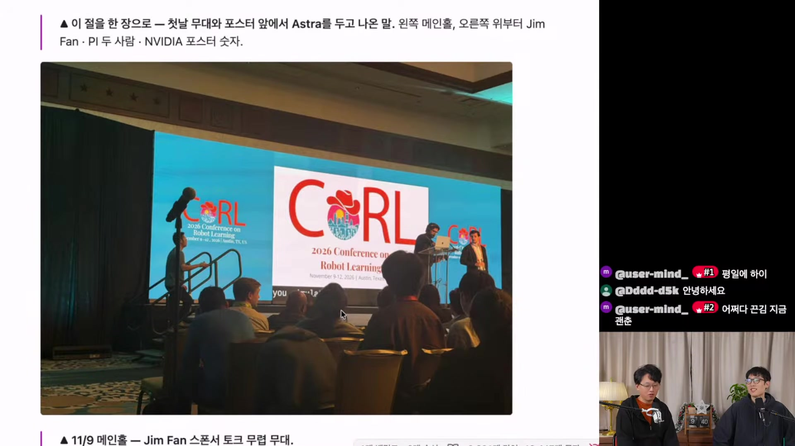
초록
CoRL 2026에 참석한 RLWRLD 소속 진행자가 현장에서 가장 자주 들었다는 모델 이름은 Astra였다. 정규 논문에는 시각·언어·행동 모델(VLA)과 월드 모델 연구가 쌓여 있었고, 현장 대화는 범용 모델이 이들에게 어떤 지시를 줄 수 있는지로 옮겨갔다. 이 글은 참석자의 노트, 포스터 앞 대화, 부스 촬영을 따라가며 그 변화가 실제 로봇에서 어떤 모습이었는지 살펴본다.
- 연구 동향을 읽는 두 시점
- 정규 논문과 학회 직전까지 모은 초기 결과 사이에 수개월의 시차가 있었다. 점심시간 포스터에서 최신 질문이 더 선명하게 드러났다.
- 계획과 제어의 분업
- 장면을 읽고 다음 행동을 고르는 모델 아래에, 움직임을 실행하는 정책과 접촉을 마무리하는 제어기를 두는 사례가 관찰됐다.
- 성공 한 번의 비용
- NVIDIA 포스터 인터뷰에서는 에이전틱 방식의 비용이 직접 방식의 약 20배로 기록됐다. 실패 이력을 주는지에 따라서도 결과가 달라졌다.
현장 기록
논문이 쓰인 뒤, 학회장의 질문이 바뀌었다
CoRL(Conference on Robot Learning)은 로봇이 시범을 모방하거나 시행착오를 거쳐 행동을 배우는 방법을 다루는 학회다. 진행자가 기억하는 전년 서울 행사의 장면은 Gemini Robotics의 셀카와 Dyna 양팔 로봇의 빠른 빨래 개기였다. 오스틴에서 그가 대담의 첫머리에 꺼낸 것은 로봇의 동작보다 복도에서 거듭 들은 모델 이름이었다.
진행자의 설명으로는 정규 논문은 대체로 학회 6~7개월 전에 쓰였고 Astra는 학회 약 두 달 전에 등장했다. 이 시차를 엿볼 수 있었던 자리가 Late Breaking Results였다. 학회 2주 전까지 받은 초기 결과를 ‘에이전틱 로보틱스’와 ‘Real2Sim2Real’로 묶어 점심시간에 포스터로 선보였다. 전자는 에이전트가 상황에 따라 로봇의 다음 행동을 고르는 접근, 후자는 실물과 시뮬레이션을 오가며 해법을 다듬는 접근이다.
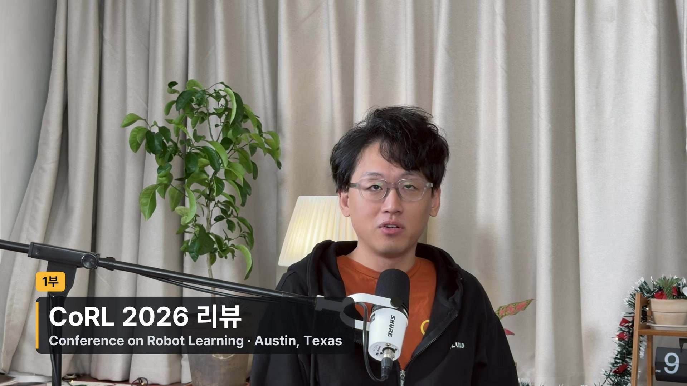
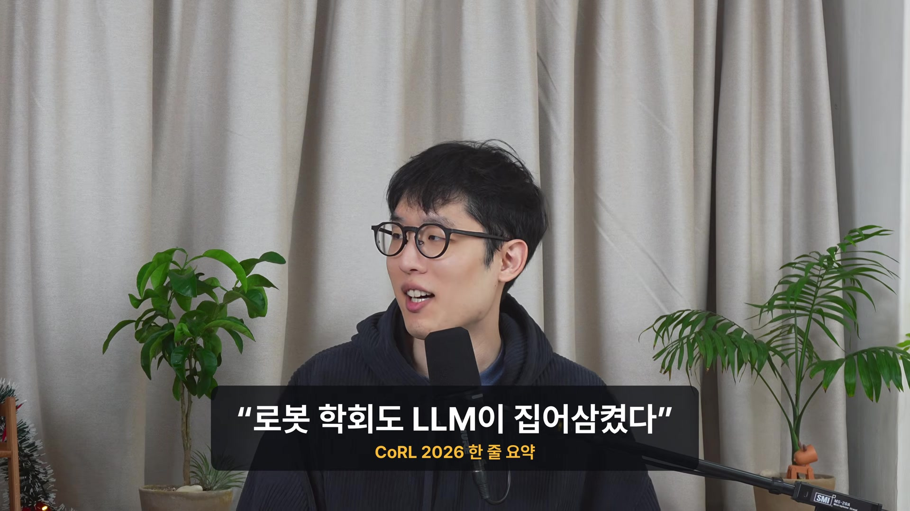
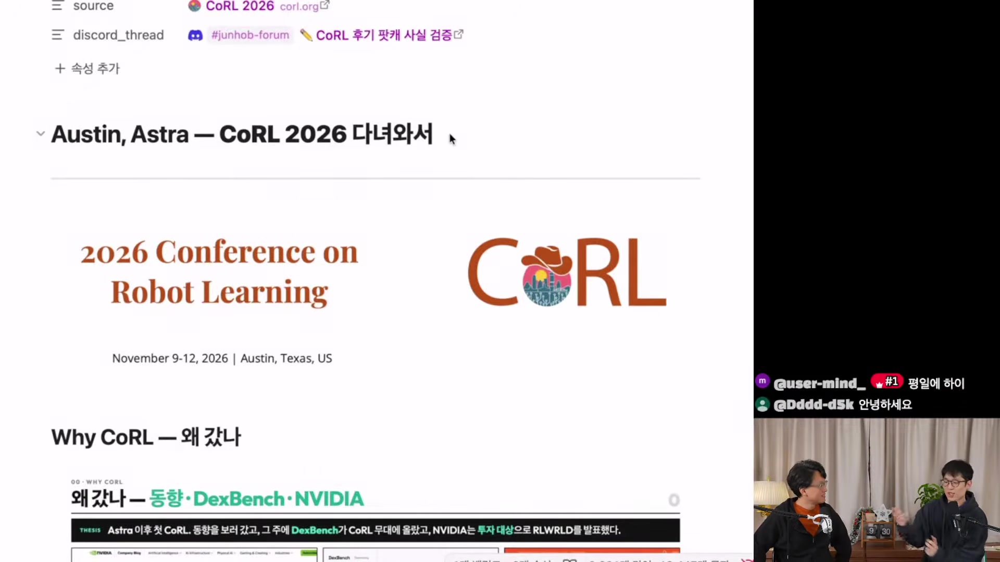
Jim Fan이 보여준 역할 분담
스폰서 토크의 하노이 탑 시연에서 Astra는 화면 위에 가이드를 그렸고, NVIDIA의 GR00T 2가 그 가이드에 따라 움직였다. 노트에는 해당 과제를 별도로 학습하지 않은 ‘제로샷’ 시연으로 기록돼 있다. Jim Fan이 로봇의 빠른 행동 능력, 이른바 ‘System 1’에 여전히 연구할 것이 있다고 설명한 대목이다. Russ Tedrake의 토크에서도 Astra 이후 자신의 연구를 어떻게 이어갈지 고민하는 박사과정 학생의 이야기가 나왔다.
“Astra didn't shatter our dreams, but it shattered our walled gardens.”
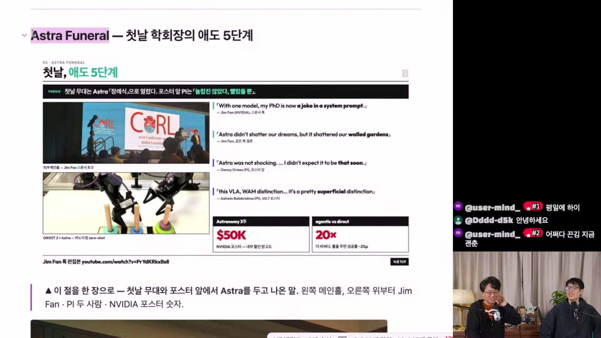
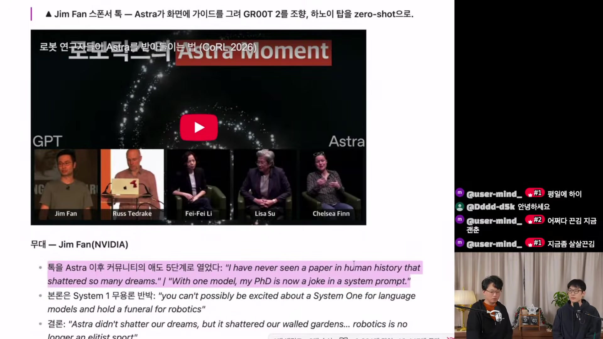
대담에서는 GR00T 2의 학습 재료도 언급했다. 진행자에 따르면 원격으로 로봇을 조종해 얻은 시범과 구별되는 사람의 행동 데이터를 100만 시간 모아 40만 시간으로 선별했고, 그중 10만 시간을 공개했다. 모델 가중치 공개는 영상에서 향후 계획으로 소개됐다.
포스터 인터뷰
일을 쪼개면 로봇이 해낸다. 그 과정에는 얼마가 들까?
Physical Intelligence(PI)의 π0.7은 “고구마를 에어프라이어에 넣어라”는 지시에 막혔다. 손잡이를 잡고 당기도록 일을 쪼개 지시하자 성공했다. 같은 로봇에서도 어떤 단위로 지시하는가가 이미 배운 움직임을 꺼내 쓰는 데 영향을 준 사례다.
PI의 Ashwin Balakrishna는 가능한 정보를 폭넓게 조건으로 주고 예측에 활용하자는 관점에서 VLA와 월드 액션 모델(WAM)의 구분을 느슨하게 봤다. Astra가 들어오면서 행동 데이터에 설명을 붙이는 작업도 수월해졌다고 했다. 한편 학습 경험이 없는 형태의 로봇 몸체로 π0.7을 옮겼을 때 곧바로 적절한 움직임이 나오지는 않았다고 전했다.
NVIDIA Astronomy가 비교한 선택
Astronomy 팀은 Astra를 제어에 쓰는 방식을 비교했다. 직접 행동을 출력하게 할 때와 에이전트가 중간 단계를 거치게 할 때, 또 이미지 일부를 잘라 보거나 역기구학(IK) 도구를 쓸 수 있게 할 때 어떤 차이가 생기는지 살폈다. 아래 수치는 Ashna Khetan과 나눈 대화를 진행자가 기록한 값이다.
- 5만 달러
- 3주 실험의 총비용. 내부 API 할인을 적용한 금액으로 소개됐다.
- 약 20배
- 에이전틱 방식의 비용을 같은 비교의 직접 방식 비용으로 나눈 값.
- −2%p
- 크롭·IK 도구를 제공한 조건에서 관찰된 성공률 차이. 단위는 퍼센트포인트다.
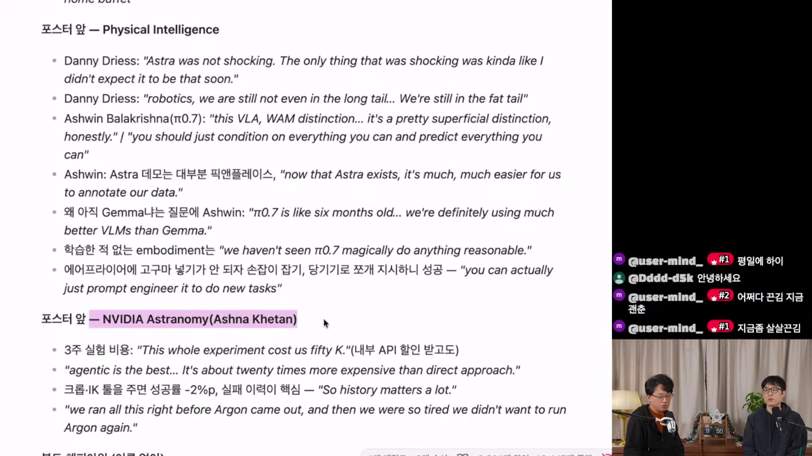
도구와 실패 이력은 다른 정보다
인터뷰에서 연구자가 강조한 것은 앞선 시도의 실패를 모델이 볼 수 있는지였다. 도구를 추가한 조건에서는 성공률이 소폭 낮아졌고, 실패 이력은 다음 행동을 고르는 데 중요했다고 했다. 노트에는 비교별 표본 수, 성공률 절댓값, 반복 측정의 편차가 없어 2%p 차이의 통계적 의미를 판단하기 어렵다.
부스 비교 · 계획과 실행
세탁기 문을 닫는 마지막 힘은 어디에서 나오나
Dyna의 휴머노이드는 세탁기에서 수건을 꺼내 바구니로 옮겼다. 진행자가 눈여겨본 순간은 문이 거의 닫힌 뒤였다. 로봇은 문을 한 번 더 꾹 누르고 버튼을 눌러 모드를 복구했다. ‘문 닫기’라는 짧은 지시 안에는 이동 속도와 접촉력을 맞춰야 하는 동작이 들어 있다. 부스 엔지니어는 사람의 4분의 1 속도로 일한다면 고객이 구매할 이유를 묻게 된다고 했다.
| 시스템 | 동작의 흐름과 근거 |
|---|---|
| Gemini Robotics 2.5 | 음성 지시를 받으면 계획 텍스트가 표시되고 로봇이 물체를 옮겼다. 상위 모델이 VLA에 지시한다는 설명은 이를 본 진행자의 해석이다. 상위 모델의 정체는 확인되지 않았다. |
| Dyna Robotics | 부스 설명은 시각·언어 모델(S2) → 월드 모델(S1) → 전신제어(S0)의 세 층이었다. 세탁기 앞에서 본 속도와 문 닫기 동작은 이 구조로 수행한 사례다. |
| MicroAGI | 상위 언어 모델이 장면을 해석해 궤적을 만들고 시뮬레이션에서 학습한 강화학습(RL) 정책이 움직임을 수행했다. 드라이버의 마지막 정렬과 볼트 체결은 고전제어가 맡았다는 현장 설명이다. |
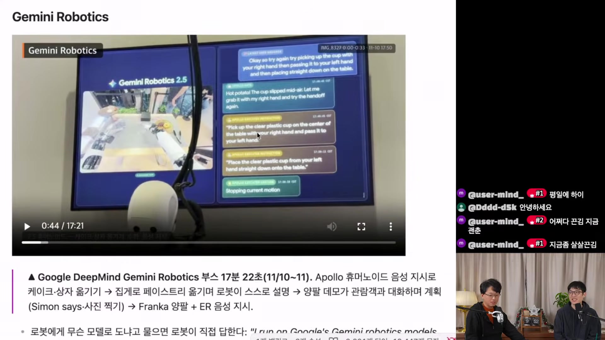
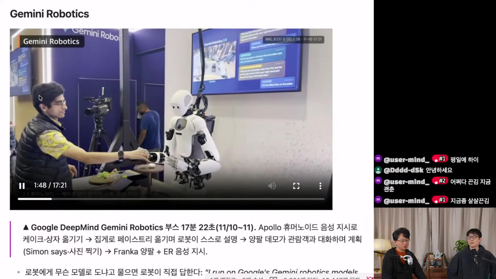
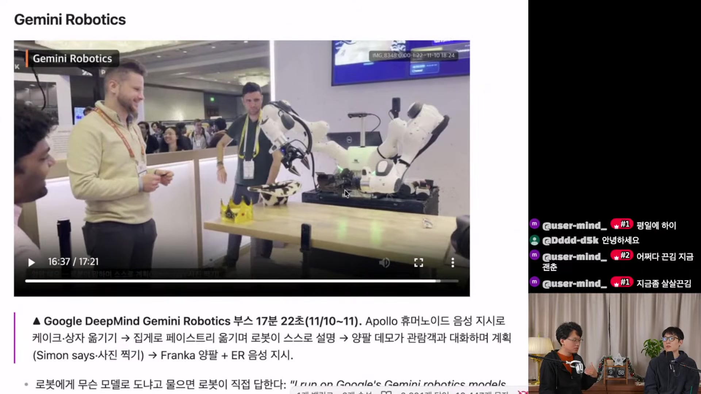
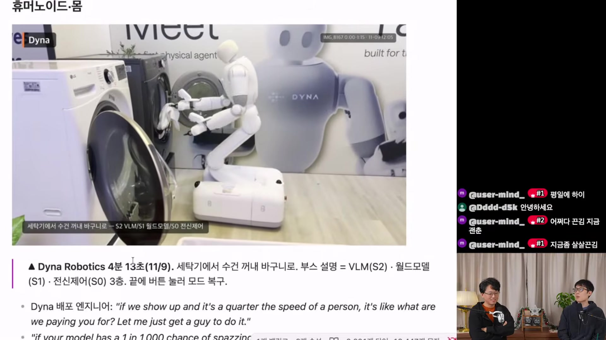
Gemini 부스에서는 관람객이 케이크를 수화로 표현해 달라고 하자 로봇이 손가락을 움직였고, 요청자는 “얼추 맞다”고 반응했다. 즉석 지시에 반응한 흥미로운 장면이다. 대담에는 수화 표현의 정확도나 손가락별 명령 경로를 확인한 기록은 없다.
MicroAGI에서는 캐스터 바퀴가 볼트를 가렸다. 이때 계획층이 한 일은 조임 힘을 결정하는 것보다 앞에 있었다. 먼저 바퀴를 치워 볼트를 드러내는 것. 정밀 조립에서 상위 모델에 맡길 만한 판단이 무엇인지 보여주는 장면이다.
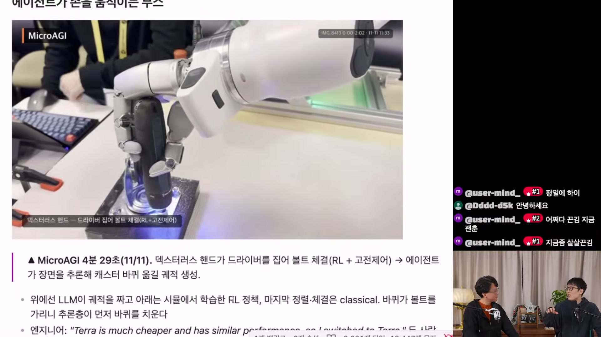
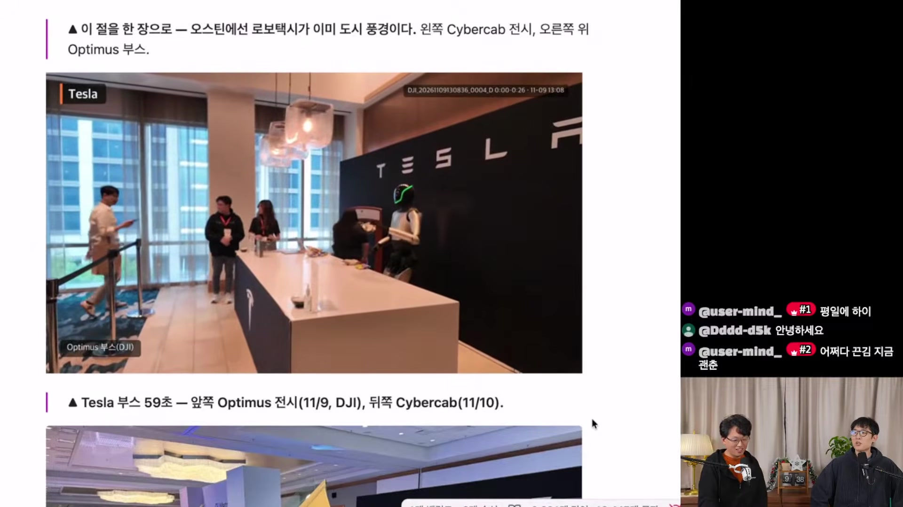
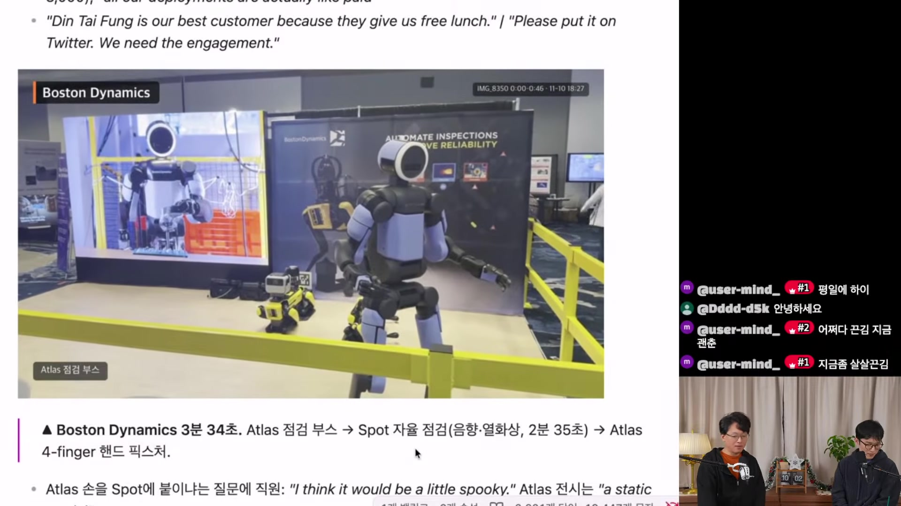
하드웨어 · 촉각과 원격조작
로봇 손을 누르면 무엇이 기록될까
Holiday Robotics 부스에서는 관람객이 Friday의 실리콘 손을 누를 수 있었다. 화면에는 손 모양의 촉각 지도가 뜨고, 진행자의 설명으로는 누른 위치에서 힘이 어느 방향으로 작용했는지까지 표시됐다. 손 아래쪽에 둔 모터가 유압으로 손가락을 구동하는 설계였다.
직원은 사흘간 관람객이 계속 만졌어도 센서가 고장 나지 않았다고 말했다. 양산 가격을 묻자 답은 품질 편차로 돌아왔다. 같은 손 한 대를 작동시키는 데서 같은 품질로 100대, 1,000대를 만드는 데까지가 남은 과제였다.
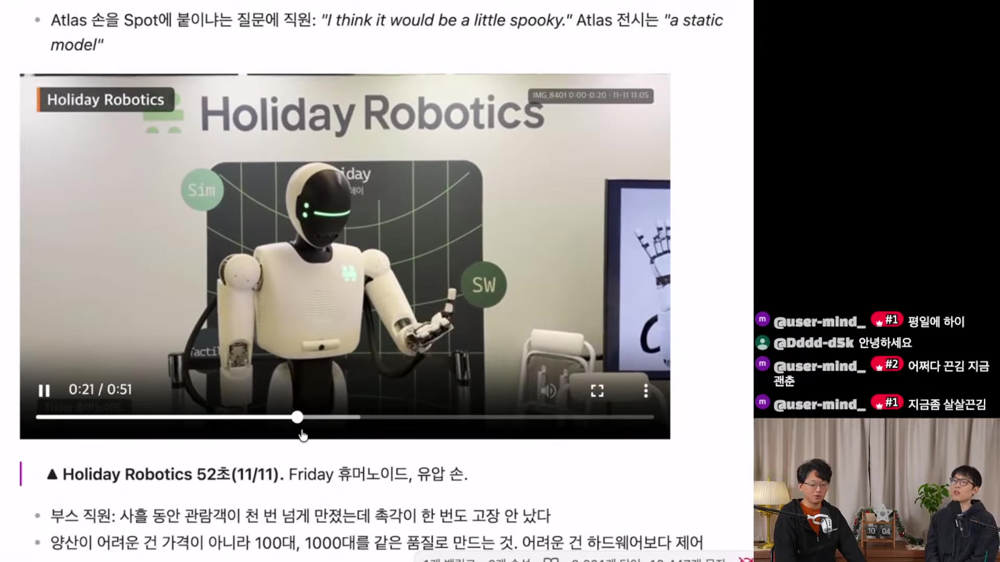
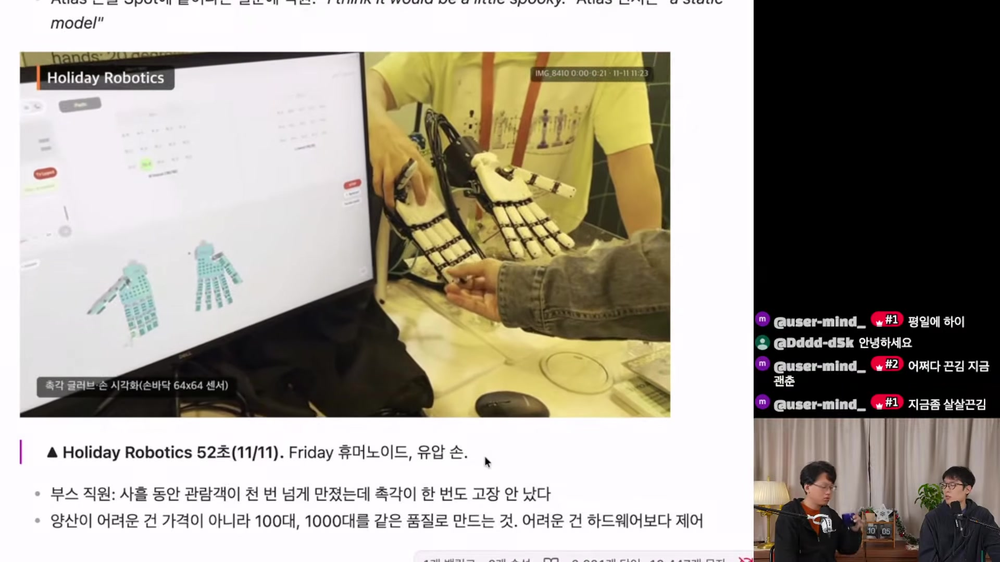
조종하는 손과 따라 하는 손
Sharpa는 사람이 외골격 글러브를 끼면 별도의 로봇 손이 손가락 움직임을 따라가는 구성이었다. 현장 설명에 따르면 두 장치의 관절 움직임이 일대일로 대응한다. 로봇이 물체에서 느낀 힘이 조작자의 손으로 돌아오는지는 확인되지 않았다.
UMI Arena에서 체험한 RoMeLa 장갑은 다른 선택을 했다. 사람이 손을 넣으면 동작을 보여주는 리더가 되고, 더미 손을 넣으면 물체를 잡는 그리퍼로도 쓸 수 있다. 진행자가 창의적이라고 꼽은 구성이지만 직접 껴 보니 조작은 예상보다 까다로웠다. 시범 데이터를 모을 때 장치의 자유도와 사람이 쉽게 반복할 수 있는 동작은 따로 살펴야 한다는 점을 떠올리게 한다.
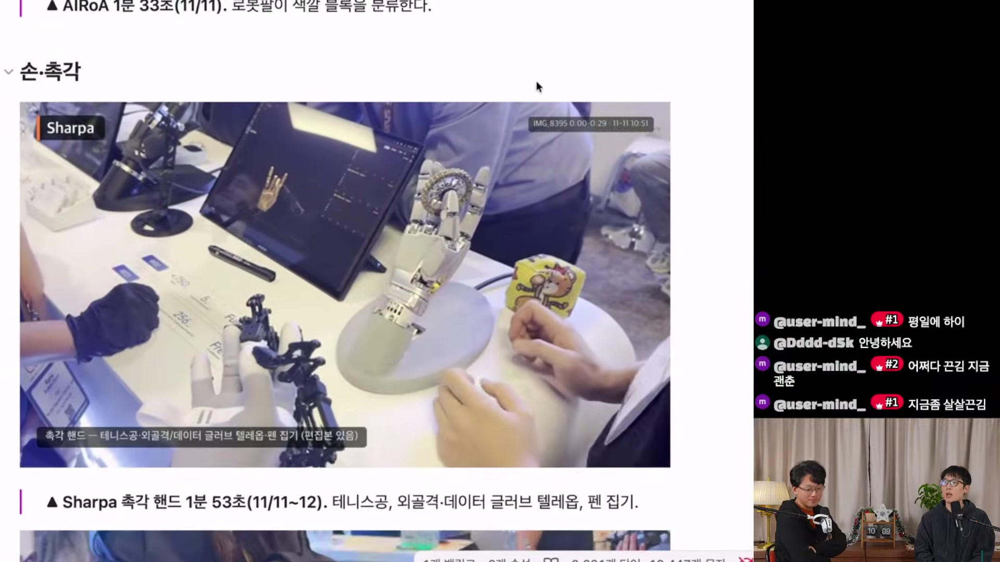
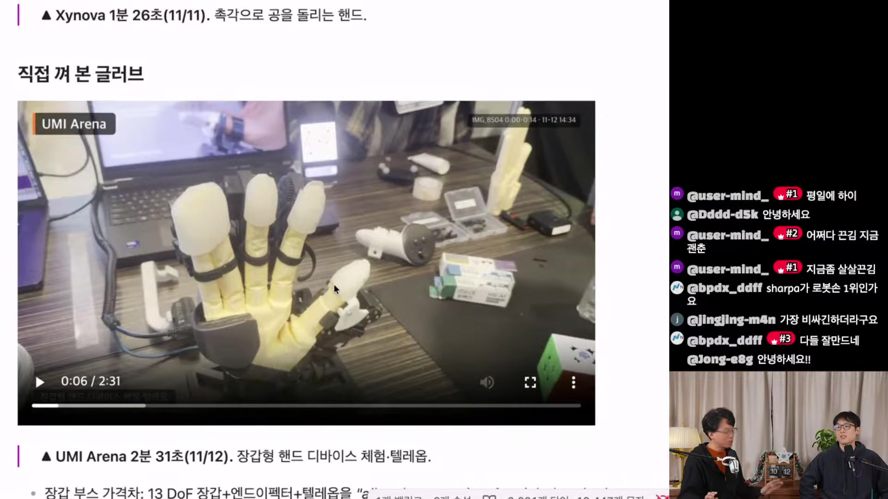
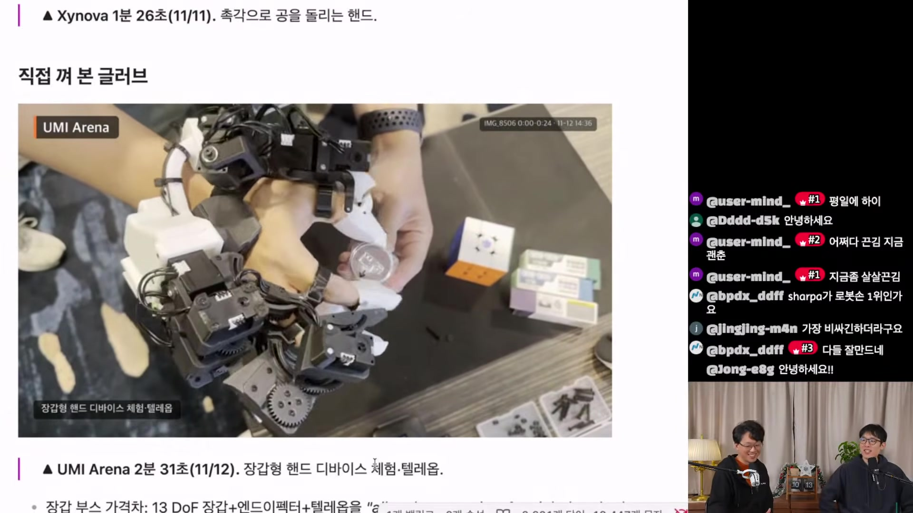
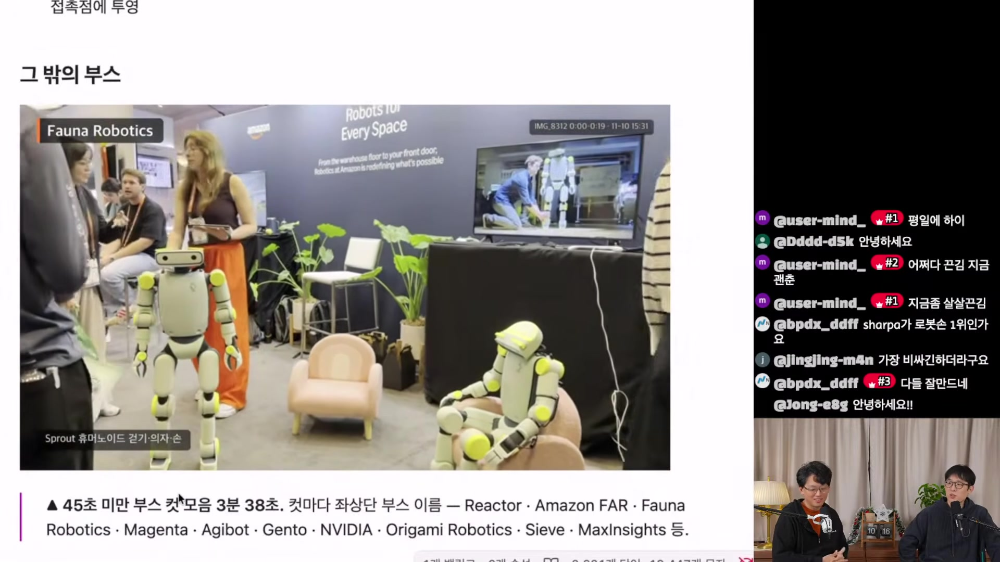
평가 · 시뮬레이션에서 실물까지
볼트 두 개, 제한 시간 70초
냉장고 문 경첩에 볼트 두 개를 체결하려면 먼저 파워 드라이버를 집어야 한다. DexBench의 이 과제에는 70초의 제한 시간과 평가 120에피소드가 명시돼 있다. ‘로봇이 드라이버를 쓸 수 있다’는 설명을 읽을 때 어떤 물체, 몇 번의 체결, 얼마의 시간인지 따져볼 수 있는 사례다.
RLWRLD와 NVIDIA가 협업한 DexBench는 다섯 손가락의 산업 작업 능력을 시뮬레이션에서 평가한다. 화면에 제시된 구성은 Isaac Lab-Arena와 Newton 물리 엔진, RBY1 기반 몸체, 15개 과제와 3개 평가 축이다. 16개 행동과 78개 기술은 산업 손재주를 나눈 분류 체계다. 과제 목록에는 리테일, 물류, 제조, 호텔 식음료 업무가 포함됐다.
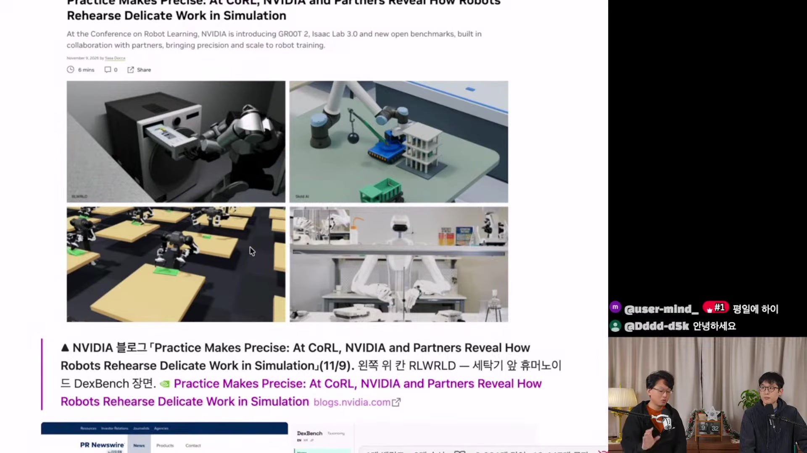
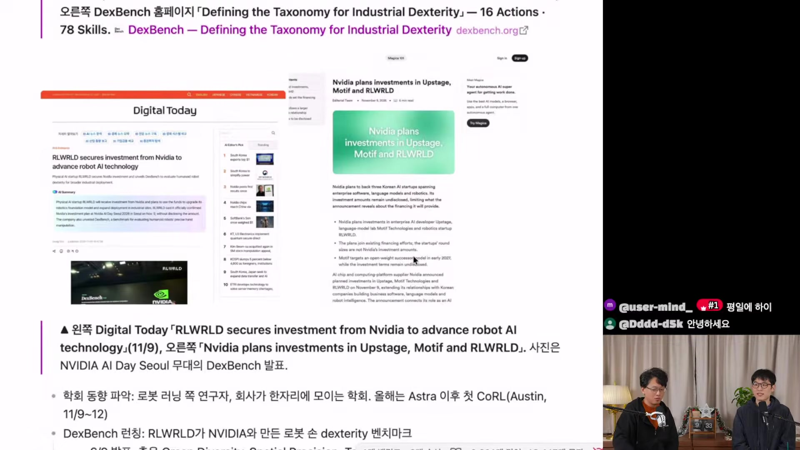
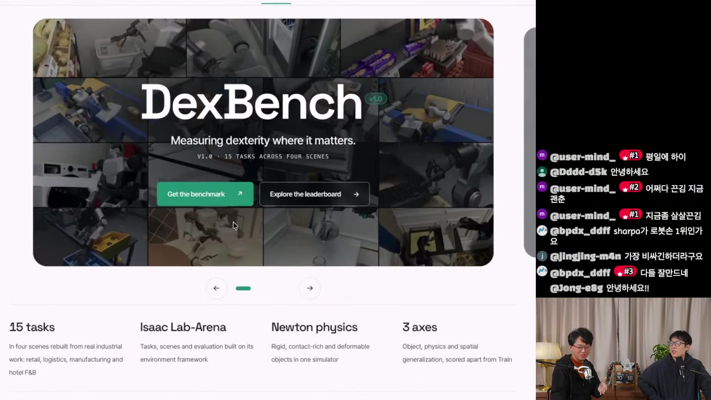
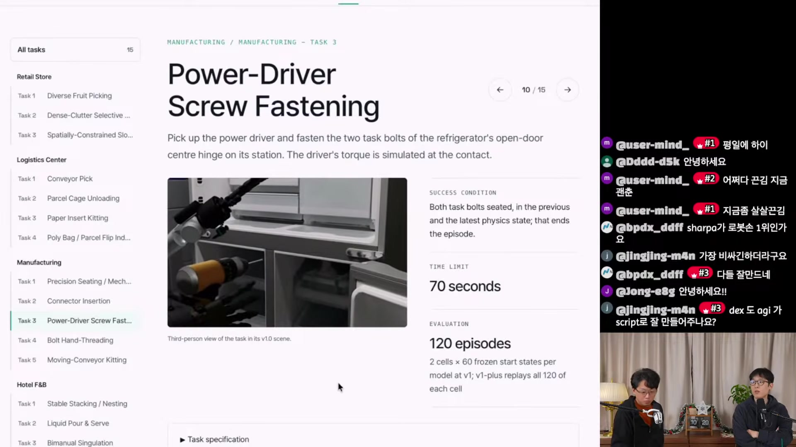
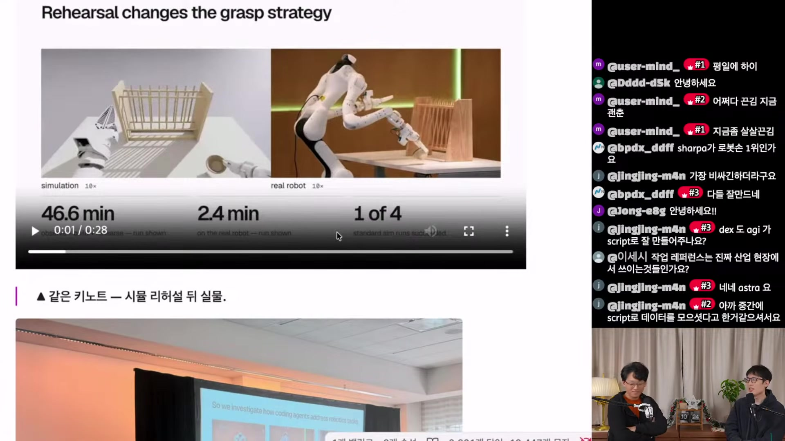
리허설 뒤, 잡는 방법이 바뀌었다
Goldberg의 시연에서 주목할 결과는 시뮬레이션 경험 뒤 실물의 파지 전략이 달라졌다는 점이다. 두 시간값은 서로 다른 단계에 붙은 표기다. 실물만으로 같은 과제를 수행한 대조 조건이 없어 이 숫자만으로 시간 절감률을 계산할 수는 없다.
시사점
다음 시연에서는 실패한 직후를 보자
후반 대담에서 진행자들은 집어 옮기기처럼 시뮬레이터에 구현하기 쉬운 과제와 케이블 타이처럼 민첩한 접촉이 필요한 실물 작업 사이의 간극을 짚었다. 에이전트가 벤치마크 점수를 끌어올려도, 접촉이 어긋난 순간 손이 얼마나 빨리 힘과 자세를 바꿀 수 있는지는 별도로 측정해야 한다.
정밀 조립이나 건설 로봇이라면 MicroAGI의 체결 장면을 출발점으로 삼을 수 있다. 볼트가 가려졌을 때는 장면을 다시 읽고 작업 순서를 바꾸는 능력이 필요하다. 드라이버가 볼트에 닿은 뒤에는 정렬 오차와 힘에 제때 반응해야 한다. 같은 체결 과제에서 완료율, 완료까지 걸린 시간, 재시도 횟수, 모델 호출 비용을 함께 기록하면 어느 단계에서 상위 모델의 판단이 값을 하는지 비교할 수 있다. 이는 현장 사례에서 도출한 평가 제안이다.
진행자는 연구자가 택할 세 방향으로 에이전트가 아직 못 하는 동작을 풀기, 할 수 있는 작업의 성공을 돕기, 일할 환경을 설계하기를 꼽았다. 대담은 다음 CoRL까지의 변화를 예상하는 ‘State of Robotics 2027’ 목록을 만들어 보자는 제안으로 끝났다. 그 예측을 읽을 때 떠올릴 만한 장면은 가려진 볼트다. 로봇이 한 번 멈춘 뒤 무엇을 보았고, 무엇을 바꾸었으며, 결국 체결까지 마쳤는가.